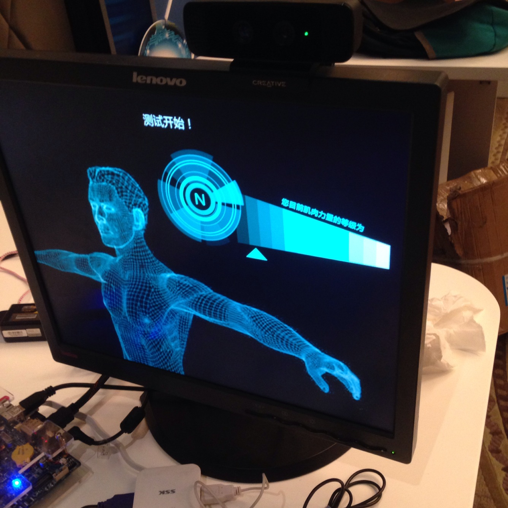
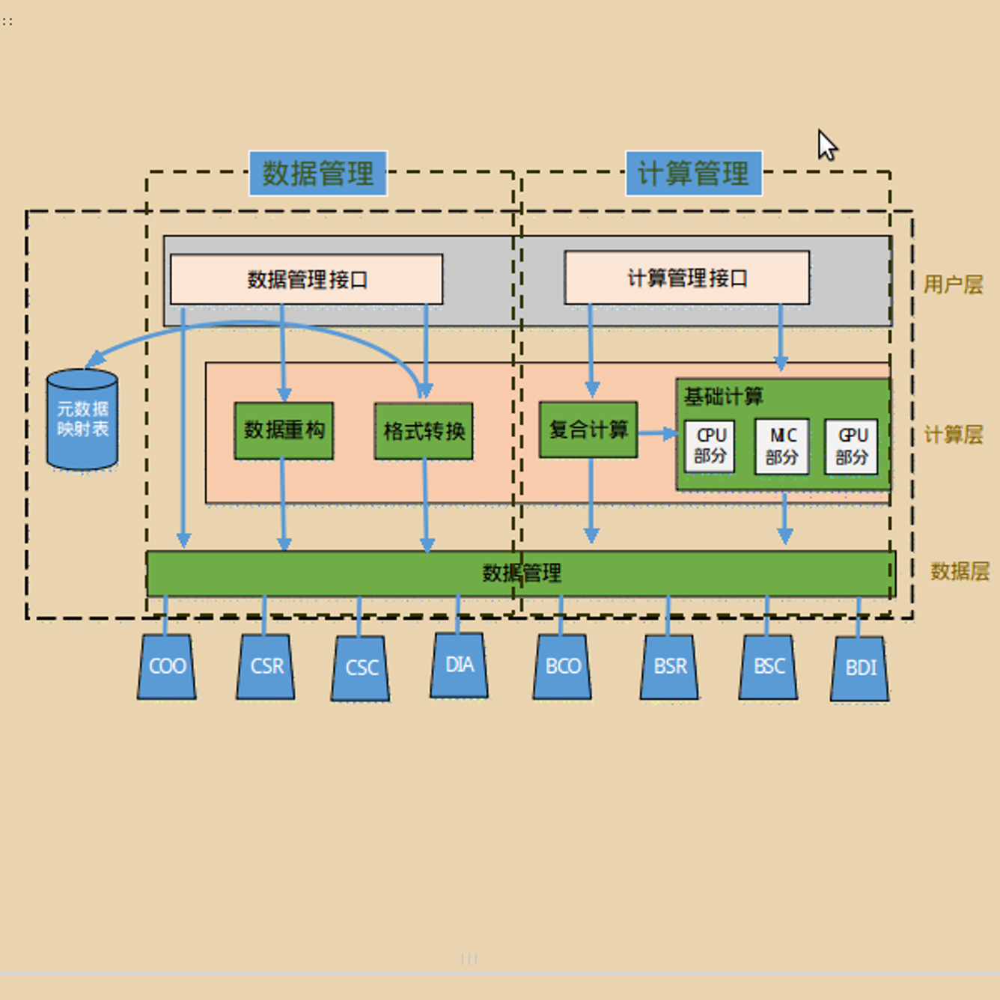

上肢辅助复健系统:
用于上肢运动能力障碍甚至缺失的病人进行自主恢复训练.它让病人脱离了鼠标的束缚,
可以完全通过手势控制游戏的整个进程.我们通过咨询医生和患者,在游戏中嵌入了基本成熟的疗程机制,
并且拥有肌力评级模块,检测病人的复健效果.
系统分为硬件和软件两个大部分,硬件部分采用RealSense 3D摄像头,屏幕和牵引架作为主要输入输出设备,
用Intel的Galileo接收蓝牙传输的数据,以Intel Bay Trail为中央处理单元.软件部分以专业医师的建议为原则,
在Unity3D游戏引擎的帮助下设计康复辅助游戏.
如果你想了解更多,请百度搜索上肢辅助复健系统或者查看北京晚报2014年8月30日第8版,
这里是相关视频.

iBlas:
这是一个面向众核体系结构的稀疏矩阵算法库,将高性能计算领域中经常被调用的稀疏矩阵向量计算包装为
一个算法库供使用者直接调用,给使用者带来极大便利.它可以兼容多种体系结构,例如单核以及多核
CPU,MIC和GPU.
iBlas提供了三层计算,分别是向量-向量(Level1),矩阵-向量(Level2)和矩阵-矩阵(Level3)计算.
iBlas支持八种常见的稀疏矩阵存储格式,分别是基础格式:COO,CSR,CSC和DIA,以及分块格式:BCOO,BCSR,
BCSC和BDIA.并且支持这八种稀疏矩阵存储格式之间的相互转换.
iBlas中主要的优化方法是:内存对齐,多线程优化,MIC加速卡优化和GPU加速卡优化.